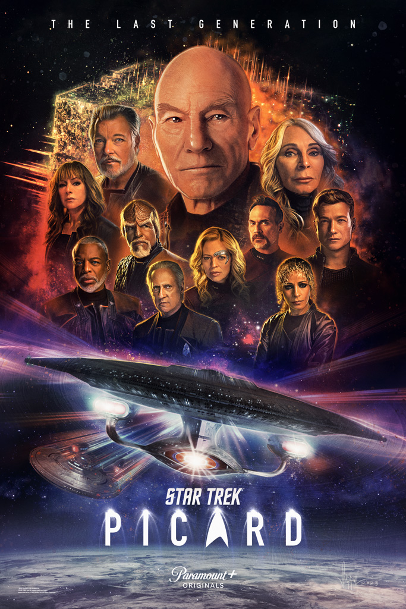
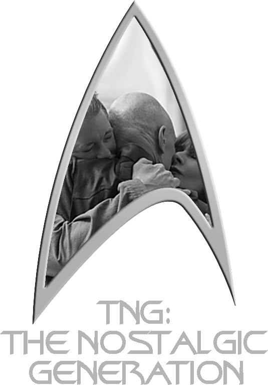
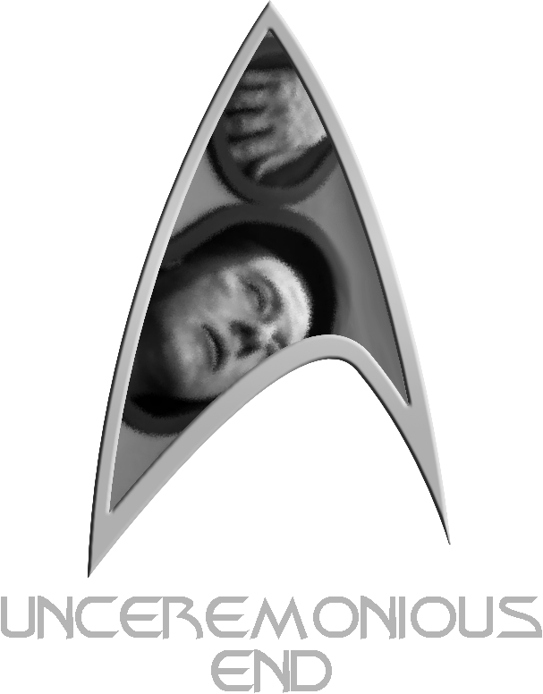
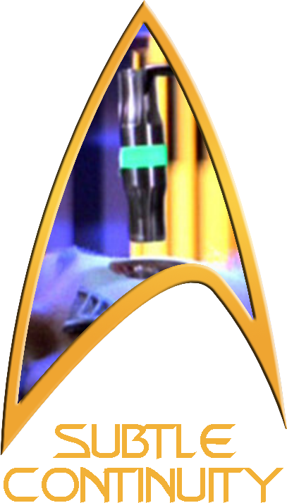

DRAFT PAGE - MISTAKES MAY BE PREVALENT - SCORES ARE NOT FINAL

Season 3
The third and final season...
You do not need to watch anything before enjoying Season 3 of Picard, but you might enjoy it a little bit more if you know some of the background. Below is a suggested watch-list to consider before watching this season, or maybe you'd rather come back to this list afterwards.
Suggested Prerequisite Watch List
Series
Episode
Title
Description / Relevance
TNG
1x01/02
TNG
3x16
TNG
3x15
TNG
5x26 & 6x01
TNG
7x25/26
Film
#8
Additional Related Watching
Series
Episode
Title
Description / Relevance
TOS
3x26
TNG
1x06
TNG
3x13
TNG
VOY
VOY
VOY
3x01
Original Air Date 3 Mar 2022
Series Episode 11
Franchise Episode 818
The Star Gazer
No-spoiler reviewFull review
Over a year has passed since the Federation lifted the ban on synths. Picard, Rios, Raffi, and Elnor settle into new roles at Starfleet while Seven returns to mercenary work, Soji hosts posh synth parties, and Jurati gets drunk. Picard visits Guinan at 10 Forward Avenue for a drink, lamenting that he never found time for love. Earlier, he had had a flashback to his childhood where apparently his parents fought both verbally and physically. His mother, wanting more for him, tells Jean-Luc to “look up” at the stars as they stand in their new château's solarium. Back in the present, a very strange spatial anomaly opens up and asks for Picard's help, which gets the whole gang back together. Well, except for Soji. It's the Borg. They say they want to join the Federation, but they also start assimilating everything in sight. Picard orders the ship to auto-destruct, and then he wakes up back at his château, but he's wearing a bizzaro Starfleet badge and there's weird hexagons in the sky. Everything has changed, somehow, and finally Q appears to tell Picard that “the trial never ends.”
💭
Thoughts
One of the very first things we see in this episode is what I like to call, “the hallway.” It's an interior corridor of a Starfleet ship, and it will be used over and over and over again, especially in Season 3. It will be shot from different angles, sometimes it will have boxes or other props in it, other times it won't, but it will always be the same hallway, and now you won't be able to un-see it, either. Mwahahah.
And oh look, Rios and Jurati have broken up. Well, that was short-lived. Still, Jurati gets to come along for the ride because nothing says “spatial anomaly expert” like “cyberneticist”?
😒
Annoying Character
Rios for the cigar on the bridge. It just doesn't feel right.
🔗
References
Picard calls Elnor “the first fully-Romulan cadet.” This could be a nod to a previous cadet, Simon Tarses, who was one-quarter Romulan and a person of interest during an inquiry in TNG 4x21: The Drumhead.
Picard attributes the line, “Look up, and let's see what's out there” to his mother. Picard's final line in the series premiere of The Next Generation, TNG 1x01: Encounter at Farpoint, is “Let's see what's out there. Engage,” effectively kicking off the series.
Rios's ship is the U.S.S. Stargazer, NCC-82893. Picard's first command was the U.S.S. Stargazer, NCC-2893. Both have the distinguishing four-nacelle layout.
Picard says he is looking to make changes to the Kobayashi Maru, an infamous test for Starfleet cadets that assesses their ability to cope with a no-win scenario. It's established in Star Trek II: The Wrath of Khan that James Kirk famously beat the test by reprogramming the scenario. Said Kirk, “I don't like to lose.”
When Picard beams to Los Angeles to visit Guinan at her bar, he first looks at the street sign for “Forward Ave” and then walks to the bar, which is number 10 on that street. This is a play on Ten Forward, the bar and lounge that Guinan ran on the Enterprise-D. It was on deck ten, forward section.
Picard activates the auto-destruct program with authorization code “zero-zero-zero-destruct-zero.” This is the same code used by James Kirk in Star Trek III: The Search for Spock.
“Mon capitaine” is Q's long-time nickname for Picard, and “the trial never ends” is a reference to the final episode of The Next Generation, TNG 7x25: All Good Things….
⁉
Nitpickery & Other Weirdness
About 13 minutes into the episode, when Picard is looking for a book and Laris enters, there is a stone tablet sitting on the table that looks remarkably like the Reckoning Tablet from DS9 6x21: The Reckoning, which is notably an unresolved story. The tablet is also prominently visible in the Season 2 Teaser. However, the tablet is never referenced, nor does it have anything to do with the story. It is mere mise en scène. This makes me wonder if the prop was used intentionally as a red herring for eagle-eyed viewers, or if it was just something in the prop archives that a set designer thought would make an interesting centerpiece, without understanding its origin.
I can't stop laughing at Rios running back to his captain's chair when the crisis starts. There's just something comical about it, like he can't run the ship unless he's in the chair or something.
🏅
Distinctions

The Nostalgic Generation: The Stargazer, Guinan, and Q
Viewer discretion warning: The opening scene depicts physical torture and is quite gory. It may be disturbing to some viewers.
💭
Thoughts
T
W
😒
Annoying Character
Jurati for that annoying fake laugh in her home movie, and for being generally incompetent.
🔗
References
⁉
Nitpickery & Other Weirdness
🏅
Distinctions


The Nostalgic Generation: Voyager Theme Song
( +1 more spoiler )
Unceremonious End: Icheb, Maddox Icheb, a well-liked character from Star Trek: Voyager, appears for a whopping 1 minute and 44 seconds only to be tortured and killed. Too bad! Bruce Maddox only had one prior appearance in The Next Generation, but he doesn't make it past this episode, either. Womp, womp!
Subtle Continuity: Icheb's Cortical Node
Stardust City Rag
My rating:
6
PROS
+ Seven of Nine! + Icheb's cortical node continuity
CONS
− Icheb and Bruce are not played by the original actors
The end of this season was missing a scene, I think. I say that sort of tongue-in-cheek, because it's just one that I think would have been funny, but also delightful in that it would give us cameos from some other TNG characters. See, Picard has some explaining to do for poor Laris. I think he should have met with Laris, along with Beverly and Jack, and had to awkwardly explain that Jack is his son. Then Laris could have nodded sternly and said something like, “Interesting, because I was just having a most interesting conversation with another friend of yours,” and then she turns to reveal Vash. Then to just up the ridiculousness, a bunch of Picard's other former lovers start showing up. You know, maybe Nella Daren comes by, along with Kamala, just as Anij pops up on the comm line. And now here's Picard surrounded by a bunch of his former love interests. Ha! I suppose this scene sort of flies in the face of the Bechdel Test, but I still think it would have been funny.
PROS
+ Good balance of nostalgia and new material + It's distinct and separate from TNG + Brings back beloved characters like Hugh, Seven of Nine, Riker, and Troi
CONS
− Jumbled storytelling − Lots of Macguffins and deus ex machina − Kills off some of the characters it brings back: Hugh, Icheb, Maddox − Giant space orchids
"Franchise Episode" tells you the order in which episodes from ANY/ALL Star Trek television shows aired or streamed for the first time. This number excludes movies, TOS's "The Cage", and the "Very Short Treks" web shorts. click or scroll to close


 @c6reviews.
@c6reviews.